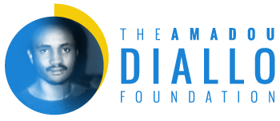

Our Mission
ADVOCATE
Advocate for racial equity
EDUCATE
Promote education and mentorship of students of African descent
EMPOWER
Empower girls and women in economic success
Our Vision
The Amadou Diallo Foundation works to achieve its mission of promoting racial equality by implementing education programs designed to identify, nurture, and support promising students—especially those of African descent—who are transitioning from high school to college. Through our scholarships, training programs, and global mentorship networks, we empower our students so that they can complete their degrees, build careers, and become conscientious leaders in their communities.
Explore Our Programs
Our Past
Following the tragic events of February 4, 1999, when an act of police brutality robbed 23-year-old Amadou Diallo of his life and an ambitious future, the Amadou Diallo Foundation was created in 2001 as a mother’s commitment to granting her son’s last wishes—”Mom, I’m going to college.” The ADF was founded to promote Amadou’s legacy by transforming tragedy into opportunities for young people. The ADF helps students pursue their dreams of achieving a college education and developing marketable skills so that they may contribute as valuable members of their communities—an opportunity that Amadou was denied.Our Present
Over the last two decades, the ADF has identified and supported 27 students of African descent in the United States through our memorial scholarships. The ADF hosts community events that bring activists, academics, and policy makers together to raise awareness about topics like democracy, police brutality and white supremacy. Across the Atlantic, in West Africa, the ADF continues to run the ADF Computer Center in Conakry, Guinea, where students learn how to code and leverage digital technology to build careers deserving of their God-given talents and newfound skills.
Our Future
Moving into 2022 and beyond, the ADF will continue to meet the growing needs of our current and prospective scholars. New initiatives like our leadership training program and our global mentorship network will bridge the divide between young people in Africa and those in the African Diaspora as they strive to transform this world for the betterment of all. We want them to succeed—and we hope that you do, too.
Get InvolvedA Mother’s Message
I was thrilled to hear the excitement in my son’s voice when he called me January 31, 1999 from New York City. “I’m so happy right now, Mom! I am going to do it.” “Do what?” I asked from my home in Guinea. “Enroll in College,” he enthusiastically replied.
I asked him if he needed my help, and he said, “No, I only need your prayers.”
That was the last phone call I had with my son. Four days later, February 4th, 1999, my world as I knew it was forever changed, and so was my role as a mother. I was thrust into a new role, one that I could have never imagined, but am fully committed to – ensuring the legacy of my son and speaking out against the injustices that resulted in his death.
The Amadou Diallo Foundation Scholarship Program was established in honor of Amadou’s academic dreams. In the spirit of Amadou, the foundation has, thus far, proudly given away scholarships to students of African descent who are achieving their college degrees. Amadou will always have my prayers, as he requested. And part of that prayer now is to support other eager students in realizing their academic dreams. While Amadou’s dreams may never be realized, through this scholarship program, and with your generous support, others will be.
With profound gratitude,
Descended from West African kings and healers, raised in the turbulence of Guinea in the 1960s, Kadiatou Diallo was married off at the age of thirteen and bore her first child when she was sixteen.
Twenty-three years later, that child—a gentle, innocent young man named Amadou Diallo—was gunned down without cause on the streets of New York City. Now Kadi Diallo tells the astonishing, inspiring story of her life, her loss, and the defiant strength she has always found within.
Enjoy The JourneyKadiatou Diallo
President & Founder
Laura Diallo-Brown
Board Member
Graham Weatherspoon
Board Member
Linda Merians
Board Member
Ahmadou Mboup
Board Member
our bios
- Kadiatou Diallo
- Laura Diallo-Brown
- Graham Weatherspoon
- Linda Merians
- Ahmadou Mboup
Kadiatou Diallo is the Founder of the Amadou Diallo Foundation, author, social activist & public speaker. But first and foremost, she is a mother. It was her role as mother that captivated the heart of America and thrust her into the social justice spotlight when her 23-year-old son Amadou Diallo s student was shot 41 times by four New York City Police officers while standing in the vestibule of his Bronx apartment building, February 4th, 1999.
The city erupted with protests and prayer vigils as politicians, celebrities and community members spoke out with disbelief and a demand for justice as both the national and international media focused on what happened that winter evening at 1157 Wheeler Avenue in the Bronx.
The community stood up for a grieving mother and a grieving mother showed up fiercely, graceful and inspirationally compelling in her quest for justice.
Mrs. Diallo rejects the portrayal of her son in the media and has become a symbol of the struggle against police brutality and racial profiling in the United States, and is using her experience to empower others. She founded The Amadou Diallo Foundation, which mission is to advocate for racial equity and promote education for students of African descent. Mrs. Diallo humanizes the tragedy of racial profiling and police brutality and continues to aggressively work with community leaders to bring about change. She has worked closely with families affected by police brutality and grassroots organizations to raise awareness and dedicated her life to ending racial inequities.
As a member of the Justice Committee (JC), Kadiatou Diallo unites with other families who have lost loved ones to the NYPD to help lead NYC's movement for an end to police violence. Over the past decade, the families in JC have provided leadership for numerous victorious Communities United for Police Reform systemic campaigns, including winning a Special Prosecutor Executive Order in 2015 and passage of legislation to repeal the "Police Secrecy Law" (50s) and codify a special prosecutor for all police killings in 2020.
Book
- “My Heart Will Cross This Ocean“ My Story My Son Amadou
Documentary Films
The documentary is a testimonial of three ethnicities – an African mother (Kadiatou Diallo), a Latino mother (Iris Baez) and a Jewish mother (Doris Buscky) – to show the world that police brutality is a human rights issue.
“Death of Two Sons,” tells the story of Amadou, and of Jesse Thyne, an American Peace Corps Volunteer who lived with Amadou’s family in his home village in Guinea. Jesse died in Guinea, less than a year after Amadou. This film explores the political, personal, and spiritual implications of their lives and deaths.
- “Trial by Media “41 shots Netflix 2020
- “Protect care and serve” 2018
- “Every Mother Son”
Passionate about the power of education, Mrs. Diallo built a learning center in Labe, Guinea in 2013. The school, provides a computer technology training with the partnership of a Senegalese IT school Bakeli to provide skills development to the youth.
Mrs. Diallo knows there is much work to be done and has made it her life’s calling. She lectures throughout the country and continues her crusade to raise awareness on issues that are fundamental to a democratic society, donating part of the proceeds to The Amadou Diallo Foundation.
Mrs. Diallo has lived in Africa and Asia. She now resides in Maryland. She is fluent in English and French.
Laura Diallo-Brown is Amadou Diallo's Sister, an elected Board Member of the Amadou Diallo Foundation. She’s also a mother of three 15 years old triplet boys. Laura has been working in the hospitality industry for over 12 years on both the supplier and planner sides of the business. Her unique background both on the supplier and planner side gives her a broad knowledge of industry demands. Laura has succeeded in managing events of all sizes from small and large groups to business travel. She’s focused on delivering exceptional value with her contract negotiations skills and ability to problem solve. Prior to joining the American Express Global Business Travel team, Laura was a Regional Area Director, responsible for selling a portfolio of 20 hotels throughout the Washington DC Market representing some of the industry’s largest and most successful brands, such as Starwood, Hilton and Marriott. She brings her years of experience along with her expertise to assist clients with meeting sourcing and contracting globally. Laura has always been focused on delivering exceptional value for her clients with her contract negotiation skills and ability to problem solve, while partnering closely with the meeting stakeholders to understand their needs and provide value to them. Her attention to detail, drive and work ethic, has earned her many praises from the clients. Laura’s hard work and dedication has contributed to the growth and success of her career at American Express Global Business Travel. Over the past few years, Laura has quickly established herself as a valuable member of the American Express Meetings & Events team and has been an integral part member working on key accounts such as Disney, ESPN & CBS which has earned her has earned her rave reviews for her service. Since the tragic death of her late brother in 1999, Laura has been an advocate for racial justice. She helps bring awareness of racial injustice issues that still exist today since the passing of her brother. Laura’s personal mission is to uphold her brother’s legacy by inspiring the young generation of dreamers to achieve his dream of going to College. She contributes to the Amadou Diallo Foundation’s events and forums to further the dialogue and create new initiatives to help restore trust in our broken system. Laura never imagined losing a person so near and dear to her heart. She always thought of her brother as her protector, her confident, her advisor but mostly her best friend! Amadou always seemed to have the right words to say and the right wisdom to share solicited or unsolicited. It was the brotherly love that was purely unconditional. As a mother of 3 young boys, Laura recognizes the issues that face our communities are greater than ever. She works tireless alongside her mother, Kadiatou Diallo to keep raising awareness by inspiring positive change and contributing to the cause.
Graham Weatherspoon is retired from the N.Y.P.D. and also served with the N.Y.C. Transit Police Department Detective Bureau's Major Case Unit. (1974-1995) Graham is a certified investigator with N.Y.P.D., the State of New York and the F.B.I. His investigations have led to the arrest and convictions of police officers, as well as civilians.
As a founding member of 100 Blacks in Law Enforcement Who Care he has served as the Director of Public Relations and Political Affairs. 100 Blacks assisted families and individuals victimized by police brutality. He has advised the New York City Council and the Conference of New York State Supreme Court Judges, on police procedures and conduct.
He has lectured at numerous Colleges, Universities and Schools of Law, in New York, Connecticuit and Washington D. C., concerning matters of police misconduct and procedures.
Linda Merians joined Guttman Community College as Chief of Staff in September 2013. An English professor by training, she specialized in eighteenth-century British Literature, and taught a wide variety of courses in her field and also in other disciplines, among them South African Literature, Women’s Studies, Shakespeare, and Composition. She was proud to serve on the faculties of Bucknell University and La Salle University from 1984-2000. Since 2000, she has worked in higher education administration at Stony Brook University, the CUNY Graduate Center, and Guttman Community College. She is proud to be a New Yorker, and is passionate about public higher education.
Mr. Ahmadou Mboup is a Senior Program Advisor for Linking Experience and Academic Practice (LEAP) at John Jay College, City University of New York (CUNY). Prior to joining the LEAP Program, Mr. Mboup was Program Advisor for CUNY’s Accelerated Study in Associated Program (ASAP) at the Borough of Manhattan Community College. Mr. Mboup graduated Magna cum Lauder from Columbia University in 2012 with a double major in International Relations and Middle Eastern, South Asian, and African Studies. In 2014, he earned a Master of Arts in Politics and International Education and Workforce Development from New York University. Mr. Mboup has worked with various organizations focusing on workforce development and youth education, including the United Nations Development Program’s Regional Bureau for Africa (RBA), Columbia University, the American Foundation for African children’s Education (AFACE) and the Manhattan Educational Opportunity Center.